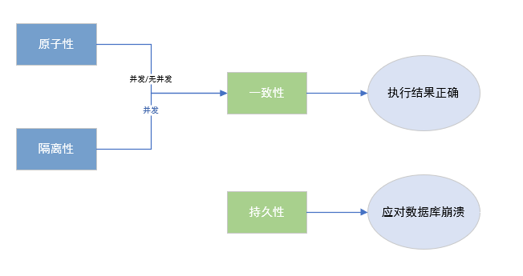
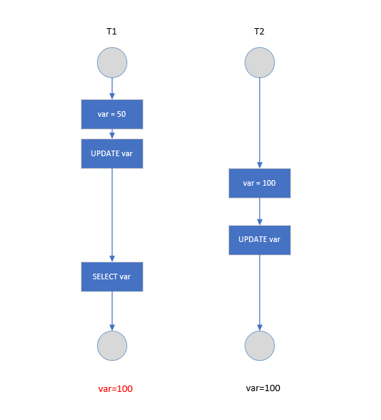
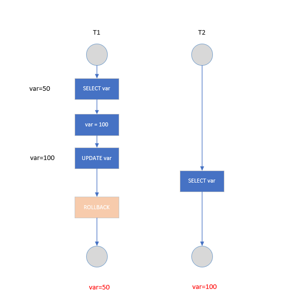
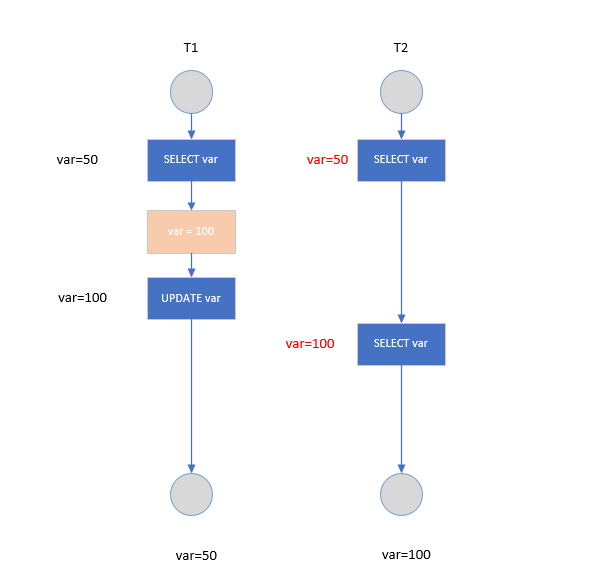
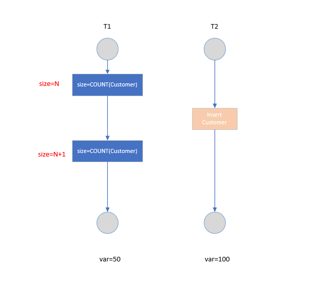

数据库相关概念
- DB：数据库，保存一组有组织的数据容器
- DBMS：数据库管理系统，又称为数据库软件，用于管理 DB 中的数据。
- SQL：结构化查询语言，用于和 DMBS 通信的语言
基本操作
- 启动服务
net start mysql - 关闭服务
net stop mysql - 登录
mysql [-h 地址 -p 端口号] -u 用户名 -p 密码 - 退出
exit或ctrl+C
MySQL的语法规范
- 不区分大小写，但建议关键词大写，表明、列名小写
- 每条命令最好分号结尾
- 每条命令根据需要，可以进行缩进或换行
- 注释
- 单行注释：#注释文字
- 多行注释：—注释文字
- 多行注释：/ 注释文字 /
SQL的语言分类
- DQL ( Data Query Language ) ：数据查询语言
select - DML ( Data Manipulate Language )：数据操作语言
insert、update、delete - DDL ( Data Define Language )： 数据定义语言
create、drop、alter - TCL ( Transaction Control Language )： 事物控制语言
commit、rollback
DQL语言的学习
基础查询
使用 SELECT 语句从表或视图获取数据。表由行和列组成，如电子表格。 通常，我们只希望看到子集行，列的子集或两者的组合。 SELECT 语句的结果称为结果集，它是行列表，每行由相同数量的列组成。
1 | SELECT |
通过 select 查询完的结果，是一个虚拟的表格，不是真实存在的
条件查询
根据条件过滤原始表的数据，查询到想要的数据
1 | SELECT |
下列表列出了可用于在 WHERE 子句中形成过滤表达式的比较运算符
| 操作符 | 描述 |
|---|---|
= |
等于，几乎任何数据类型都可以使用它 |
<> 或!= |
不等于 |
< |
小于，通常使用数字和日期/事件数据类型 |
> |
大于 |
<= |
小于或等于 |
>= |
大于或等于 |
and(&&) |
两个条件如果同时成立，结果为 true，否则为 false |
or(｜｜) |
两个条件只要有一个成立，结果为 true，否则为 false |
not(!) |
如果条件成立，则 not 后为 false，否则为 true |
还有一些有用的运算符可以在WHERE子句中使用来形成更复杂的条件，例如：
BETWEEN
BETWEEN运算符允许指定要测试的值范围。
1 | SELECT |
也可以通过使用大于或等于（ >= ）和小于或等于（ <= ）运算符来实现相同的结果
1 | SELECT |
要查找 A 不在 20 到 100（含 20 到 100 ）之间的，可将 BETWEEN 运算符与 NOT 运算符组合使用
1 | SELECT |
LIKE
LIKE 操作符通常用于基于模式查询选择数据。以正确的方式使用 LIKE 运算符对于增加 / 减少查询性能至关重要。
- % ：允许匹配任何字符串的零个或多个字符
- _ : 允许匹配任何单个字符
假设要搜索名字以字符a开头的员工信息，可以在模式末尾使用百分比通配符（％）
1 | SELECT |
如果知道要搜索包含指定字符串，则可以在模式的开头和结尾使用百分比（%）通配符。1
2
3
4
5
6SELECT
column1,column2,...
FROM
table_name
WHERE
column1 LIKE '%on%';
要查找名字以 T 开头的员工，以 m 结尾，并且包含例如 Tom，Tim 之间的任何单个字符，可以使用下划线通配符来构建模式1
2
3
4
5
6SELECT
column1,column2,...
FROM
table_name
WHERE
column1 LIKE 'T_m';
- MySQL 允许将 NOT 运算符与LIKE运算符组合，以找到不匹配特定模式的字符串。
- 有时想要匹配的模式包含通配符，例如 10%，_20 等这样的字符串时。在这种情况下，您可以使用 ESCAPE 子句指定转义字符，以便 MySQL 将通配符解释为文字字符。如果未明确指定转义字符，则反斜杠字符\是默认转义字符。
IN
IN 运算符允许您确定指定的值是否与列表中的值或子查询中的任何值匹配。 下面说明了 IN 操作符的语法。
1 | SELECT |
下面我们更详细的来看看上面的查询
- 可以在
WHERE中于IN运算符一起使用，也可以使用列或表达式（expr） - 列表中的值必须用逗号(
,)隔开 IN操作符可以用在其他语句(如INSERT,UPDATE,delete)的WHERE子句中- 如果column_1的值或expr表达式的结果等于列表中的任何值，则IN运算符返回1，否则返回0。
如果column_1的值或expr表达式的结果等于列表中的任何值，则IN运算符返回1，否则返回0。
IN与子查询
IN 运算符通常用于子查询。子查询不提供常量值列表，而是提供值列表。
我们来看两张表：orders 和 orderDetails 表的结构以及它们之间的关系：
例如，如果要查找总金额大于60000的订单，则使用 IN 运算符查询如下所示：
1 | SELECT |
上面的整个查询可以分为2个查询
- 首先，子查询使用
orderDetails表中的GROUP BY和HAVING子句返回总额大于 60000 的订单列表。 - 主查询
order表中获取数据，并在WHERE子句中应用IN运算符
排序查询
1 | SELECT |
分组查询
1 | SELECT |
- 可以按单个字段分组
- 和分组函数一同查询的字段最好是分组后的字段
特点：
- 分组查询中的筛选条件分为两类
| 分组筛选 | 针对的表 | 位置 | 关键字 |
|---|---|---|---|
| 分组前筛选 | 原始表 | group by的前面 | where |
| 分组后的筛选 | 分组后的结果集 | group by的后面 | having |
- 可以按多个字段分组，字段之间用逗号隔开
- 可以支持排序（排序放在整个分组查询后面）
- having 后可以支持别名
常见函数
| 单行函数 | 含义 | |
|---|---|---|
| 字符函数 | concat | 拼接 |
| substr | 截取子串 | |
| upper | 转换成大写 | |
| lower | 转换成小写 | |
| trim | 去前后指定的空格和字符 | |
| ltrim | 去左边空格 | |
| rtrim | 去右边空格 | |
| replace | 替换 | |
| replace | 替换 | |
| lpad | 左填充 | |
| rpad | 右填充 | |
| instr | 返回字串第一次出现的索引 | |
| 数学函数 | round | 四舍五入 |
| rand | 随机数 | |
| floor | 向下取整 | |
| ceil | 向上取整 | |
| mod | 取余 | |
| ceil | 截断 | |
| 日期函数 | now | 当前系统日期+时间 |
| curdate | 当前系统日期 | |
| curtime | 当先系统时间 | |
| str_to_date | 将字符转换成日期 | |
| date_format | 将日期准换成字符 | |
| 流程控制函数 | if | 处理双分支 |
| case | 处理多分支 | |
| 其他函数 | version | 版本 |
| database | 当前库 | |
| user | 当前连接用户 | |
| 分组函数 | sum | 求和 |
| max | 最大值 | |
| min | 最小值 | |
| avg | 平均值 | |
- 以上五个分组函数都忽略null值，除了count(*)
- sum和avg一般用于处理数值型；max、min、count可以任何数据类型
- 都可以搭配DISTINCT使用，用于统计去重后的结果
- count的参数可以支持字段、’*、常量值、一般放1
参考：【易百教程】：https://www.yiibai.com/mysql/sql-in.html
多表连接查询
笛卡尔积：没有连接条件表关系返回的结果
连接用于连接多个表，使用JOIN关键字，并且条件语句使用ON而不时WHERE。连接可以替换子查询，并且比子查询的效率一般会更快。可以用AS给列名、计算字段和表名取别名，给表明取别名是为了简化SQL语句及连接相同表。
连接：
- 内连接
- 等值连接
- 非等值连接
- 自连接
- 外连接
- 左外连接
- 右外连接
- 全外连接
- 交叉连接
内连接(INNER JOIN)
INNER JOIN 子句将一个表中的行与其他表中的行进行匹配，并允许从两个表中查询包含列的行记录。
在使用时，必须指定以下条件：
- 首先，在FROM子句中指定主表
- 其次，表中要连接的主表应该出现在
INNER JOIN子句中。理论上说，可以连接多个其他表。但是，为了获得更好的性能，应该限制要连接的表的数量(不超过3个表)
1 | SELECT |
可以不明确使用INNER JOIN,而使用普通查询在WHERE中两个表要连接的列用等值方法连接起来1
2
3
4
5SELECT
A.value,B.value
FROM
tablea AS A, tableb AS B
WHERE A.key = B.key;
自连接
自连接可以看成内连接的一种，知识连接的表是自身而已
一张员工表，包含员工姓名和员工所属部门，要找出Jim处在同一部门的所有成员姓名
子查询版本：1
2
3
4
5
6
7
8
9
10SELECT
namea
FROM
department=(
SELECT
department
FROM
employee
WHERE
namea="Jim");
自连接版本1
2
3
4
5
6
7SELECT
e1.name
FROM
employee AS e1 INNER JOIN employee AS e2
ON
e1.department = e2.department
AND e2.name = "Jim";
外连接
外连接查询会返回操作表中至少一个表的所有数据记录
左外连接
指新关系执行匹配时，以关机再LEFT JOIN左边的标为参考表1
2
3
4
5
6
7SELECT
字段，...
FROM
表1，
LEFT JOIN 表2
ON
连接条件
右外连接
指新关系执行匹配时，以关机再RIGHT JOIN左边的标为参考表
1 | SELECT |
子查询
子查询是嵌套在另一个查询中的查询，子查询称为内部查询，而包含子查询的查询称为外部查询。子查询可以在使用表达式的任何地方使用，并且必须在括号中关闭。MySQL推荐使用子查询来实现多表查询数据记录，不建议使用连接查询。
特点：
- 子查询都放在小括号内
- 子查询可以放在 from 后面、select 后面、where 后面、having 后米娜、但一般放在条件的右侧
- 子查询优先于主查询执行，主查询使用了子查询的执行结果
- 子查询根据查询结果的行数不同分为以下两类：
- 单行子查询
- 一般结果集只有一行
- 一般搭配单行操作符使用：> < = <> >= <=
- 非法使用子查询的情况
- 子查询的结果为一组值
- 子查询的结果为空
- 多行子查询
- 结果集有多行
- 一般搭配多行操作符使用：and、all、in、not in
- in：属于子查询结果中的任意一个就行，any和all往往可以用其他查询代替
- 单行子查询
1 | SELECT |
下面的语句可以检索出客户的订单数量，子查询语句会对第一个查询检索出的每个客户执行一次：1
2
3
4
5
6SELECT cust_name, (SELECT COUNT(*)
FROM Orders
WHERE Orders.cust_id = Customers.cust_id)
AS orders_num
FROM Customers
ORDER BY cust_name;
分页查询
实际的web项目中需要根据用户的需求提交对应的分页查询的sql语句
语法
1 | SELECT |
特点
- 起始条目索引从 0 开始
- limit 子句放在查询语句的最后
- 公式：SELECT FROM LIMIT (page - 1) sizePerPage，siezPerPage
假如：
每页显示条目数：sizePerPage
要显示的页数 page
联合查询
使用 UNION 来组合两个查询，如果第一个查询返回 M 行，第二个查询返回 N 行，那么组合查询的结果一般为 M+N 行。
每个查询必须包含相同的列、表达式和聚集函数。
默认会去除相同行，如果需要保留相同行，使用 UNION ALL。
只能包含一个 ORDER BY 子句，并且必须位于语句的最后。1
2
3
4
5
6
7SELECT col
FROM mytable
WHERE col = 1
UNION
SELECT col
FROM mytable
WHERE col =2;
特点：
1、多条查询语句的查询的列数必须是一致的
2、多条查询语句的查询的列的类型几乎相同
3、union代表去重，union all代表不去重
DML语言
插入
普通插入
1 | INSERT INTO mytable(col1,col2) |
插入检索出来的数据1
2
3INSERT INTO mytable1(col1, col2)
SELECT col1, col2
FROM mytable2;
将一个表的内容插入到一个新表1
2CREATE TABLE newtable AS
SELECT * FROM mytable;
修改
添加列1
2ALTER TABLE mytable
ADD col CHAR(20);
删除列1
2ALTER TABLE mytable
DROP COLUMN col；
更新
1 | UPDATE mytable |
删除
1 | DELETE FROM mytable |
使用更新和删除操作时一定要用 WHERE 子句，不然会把整张表的数据都破坏。可以先用 SELECT 语句进行测试，防止错误删除。
DDL语句
库和表的管理
创建库
1 | CREATE DATABASE 库名 |
创建表1
2
3
4
5
6
7CREATE TABLE [IF NOT EXISTS] mytable(
id INT NOT NULL AUTO_INCREMENT,
col1 INT NOT NULL DEFAULT 1,
col2 VARCHAR(50) NULL,
col3 DATE NULL,
PRIMARY KEY (`id`));
)
常见约束
- NOT NULL
- DEFAULT
- UNIQUE
- CHECK
- PRIMARY KEY
- FOREIGN KEY
数据库事务
事物的ACID属性
- 原子性(Atomicity)
事务被视为不可分割的最小单元，事务的所有操作要么全部提交成功，要么全部失败回滚。回滚可以利用回滚日志来实现，回滚日志记录者所执行的修改操作，在回滚时反向执行这些操作即可。
一致性(Consistency)
数据库在事务执行前后都保持一致性状态。在一致性状态下，所有事务对一个数据的读取结果都是相同的。隔离性(lsolation)
一个事务所做的修改最终在提交以前，对其他事务时不可见的。- 持久性(Durablility)
一旦事务提交，则其所作的修改会永远保存到数据库中，即使系统发生崩溃，事务执行的结果也不能丢失。
事务的ACID特性概念简单，大怒是很好理解，只要是因为这几个特新不是一种平级关系：
- 只有满足一致性，事务的执行结果才是正确的。
- 在无并发的情况下，事务串行执行，隔离性一定能够满足。此时只要满足原子性，就一定能满足一致性。
- 在并发的情况下，多个事务并行执行，事务不仅要满足原子性，还需要满徐隔离性，才能满足一致性。
- 事务满足持久话是为了能够应对数据困崩溃的情况。

- 持久性(Durablility)
1 AUTOCOMMIT
MySQL默认采用自动提交模式。也就是说，如果不显示使用START TRANSACTION 语句来开始一个事务，那么每个查询都会被当作一个事务自动提交
并发一致性问题
在并发环境下，事务的隔离性很难保证，也因此会出现很多并发一致性问题。
丢失修改
T1和T2两个事务都对一个数据惊醒修改，T1先修改，T2随后修改，T2的修改覆盖了T1的修改

脏数据
T1修改一个数据，T2随后读取这个数据。如果T1撤销了这次修改，那么T2读取的数据就是脏数据

不可重复读
T2读取一个数据，T1对该数据做了修改。如果T2再次读取这个数据，此时读取的结果和第一次读取的结果不同

幻影读
T1读取某个范围的数据，T2再这个范围内插入新的数据，T1再次读取这个范围的数据，此时读取的结果和第一次读取的结果不同。

产生并发不一致性问题主要原因是破坏了事务的隔离性，结局方法是通过并发控制来保证隔离性。并发控制通过封锁来实现，但是封锁操作需要用户自己控制，相当复杂。数据管理系统提供了事务的隔离级别，让用户以一种更轻松的方式处理并发一致性问题。
封锁
封锁粒度
MySql中提供了两种封锁粒度：行级锁和表级锁
应该尽量锁定需要修改的那部分数据，而不是所有的资源。锁定的数据量越少，发生锁争用的可能就越小，系统的并发程度就越高。
但是加锁需要消耗资源，锁的各种操作(包括获取锁、释放锁、以及检查锁状态)都会增加系统开销。因此封锁粒度越小，系统开销开销就越大。
封锁类型
- 读写锁
- 排它锁(Exclusive),简写为X锁，又称写锁
- 共享锁(Shared),简称为S锁，又称读锁
有以下两个规定：
- 一个事务对数据对象A加了X锁，就可以对A进行读取和更新。加锁期间其它事务不能对A加任何锁。
- 一个事务对数据对象A加了S锁，可以对A进行读取操作，但不能进行更新操作。加锁期间其他事务能对A加S锁，但是不能加X锁。
锁的兼容关系如下
| - | X | S |
|---|---|---|
| X | x | x |
| S | x | √ |
- 意向锁
使用意向锁(Intention Locks)可以更容易地支持多粒度封锁
再存在行级锁和表级锁的情况下，事务T想要对表A中的任意一行加了锁，那么就需要对表A的每一行都检测一次，这是非常耗时的。
意向锁再原来的X/S锁上引入了IX/IS，IX/IS都是表锁，用来表示一个事务想要再表中的某个数据行加上X锁或S锁。有以下两个规定：
- 一个事务再获得某个数据对象的S锁之前，必须现货的表的IS锁或者更强的锁；
- 一个事务再获得数据对象的X锁之前，必须先获得表的IX锁。
通过引入意向锁，事务T想要对表A加X锁，只需要先检测是否有其他事务对表A加了X/IX/IS锁，如果加了就表示有其他事务证字啊使用这个表或者表中的某一行的锁，因此事务T加X锁失败
各种锁的兼容关系如下：
| - | X | IX | S | IS |
|---|---|---|---|---|
| X | x | x | x | x |
| IX | x | √ | x | √ |
| S | x | x | √ | √ |
| IS | x | √ | √ | √ |
解释如下：
- 热议IS/IX锁之间都是兼容的，因为它们知识表示想要对表加锁，而不是真正加锁；
- S锁只与IS锁兼容，也就是说事务T想要对数据加S锁，其他事务可以获得对表或者表中的行的S锁。
封锁协议
在要运用X锁和S锁对数据对象加锁时，还需要约定一些规则，我们称之为封锁协议
一级封锁协议
事务T要修改数据A时必须加X锁，直到T结束才释放锁
可以解决丢失修改问题，因为不能同时有两个事务对同一个数据进行修改，哪个事务的修改就不会被覆盖。
| T1 | T2 |
|---|---|
| lock-x(A) | |
| read A = 20 | |
| lock-x(A) | |
| wait | |
| write A=19 | |
| commit | |
| unlock-x(A) | |
| obtain | |
| read A=19 | |
| write A=21 | |
| commit | |
| unlock-x(A) |
二级封锁协议
在一级的基础上，要求读取数据A时必须jiaS锁，读取完马上释放S锁
可以解决读脏数据问题，因为一个事务在对数据A进行修改，根据1级封锁协议，会加X锁，那么就不能再加S锁了，也就是不会读入数据
| T1 | T2 |
|---|---|
| lock-x(A) | |
| read A=20 | |
| write A=19 | |
| lock-s(A) | |
| wait | |
| rollback | |
| A=20 | |
| unlock-x(A) | |
| obtain | |
| read A=20 | |
| unlock-s(A) | |
| commit |
三级封锁协议
在一级的基础上，要求读数据A时必须加S锁，直到事务结束了才能释放S锁。可以解决不可重复度的问题，因为读A时，其他事务不能对A加X锁，从而笔迷拿了在读的期间数据发生变化
| T1 | T2 |
|---|---|
| lock-s(A) | |
| read A=20 | |
| lock-x(A) | |
| wait | |
| read A=20 | |
| commit | |
| unlock-s(A) | |
| obtain | |
| read A=20 | |
| write A=19 | |
| commit | |
| unlock-X(A) |
上述三级协议的主要区别在于什么操作需要申请封锁，以及何时释放锁
两段锁协议
加锁和解锁分为两个阶段进行
可串行化调度室指，通过并发控制，使得并发执行的事务结果与某个串行执行的事务结果相同。
事务遵循两段锁协议是保证可串行化调度的充分条件。例如以下操作满足两段锁协议，它是可串行话调度1
lock-x(A)...lock-s(B)...lock-s(C)...unlock(A)...unlock(C)...unlock(B)
但不是必要条件，例如如下操作不满足两段锁协议，但是他还是可串行化调度。1
lock-x(A)...unlock(A)...lock-s(B)...unlock(B)...lock-s(C)...unlock(C)
MySQL隐式与显示锁定
MySQL的InnoDB存储引擎采用两段锁协议，会根据隔离级别在所需要的时候自动加锁，并且所有的锁都是在同一时刻被释放，这被称为隐式锁定
InnoDB也可以使用特定的语句进行显示锁定1
2SELECT ... LOCK In SHARE MODE;
SELECT ... FOR UPDATE;
索引
索引是什么
索引是为了加速对表中数据行的检索而创建的一种分散存储的数据结构
This is copyright.